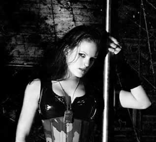

Entrevista
de Henriette Bordvik à Gino Salinas - Julho de 2003
Primeiramente,
para aqueles que não te conhecem, poderia falar um pouco
sobre você e sua função no Sirenia?
Ok. Numa fria tarde de novembro na Noruega,
em 1984, nasceu uma garota: Henriette Bordvik foi seu nome.
Garota média, suponho - mais ou menos… Começou
prestando sua voz ao Sirenia no início de 2001, onde
seu papel, depois de um tempo, se converteu em outros (entre
muitos).
Qual sua impressão
do público mexicano? Era o que esperavam?
De fato, tentei manter minhas expectativas
o mais limitadas possível quando deixamos a Escandinávia.
Mesmo assim, o México não era como tinha imaginado.
O público realmente sabe como apreciar o que estamos
oferecendo. Então, quero propor um brinde para todos
vocês, garotos e garotas que estiveram em nossos shows.
Just fuckin! Amazing!
O que mais
te agradou no México?
O Mezcal e a fabulosa cerveja. Já
que esta era minha primeira ocasião fora de Europa, realmente
pude provar muitas coisas novas, tudo era realmente diferente…
a natureza, a comida, o clima, etc… Mas suponho que tudo
se resume ao fato de que desfrutei completamente essas duas
semanas no México.
Como
começou sua carreira de cantora?
Difícil... bom... Suponho que começou
quando passei a cantar em diferentes ocasiões quando
eu era uma criança. Não só fui descoberta
por outros - eu também descobri que era algo no que desejava
trabalhar e desenvolver. Tomei algumas lições
de canto há alguns anos… Passei por diferentes
coros, concursos, algumas bandas escolares, bandas de covers
e assim… Mas sempre como cantora solo. Até que
me uni ao Sirenia, depois que uma pessoa que sabia que o Sirenia
buscava uma vocalista, me ouviu cantar num festival.
Como chegou
a fazer parte do Sirenia?
Quando o Sirenia foi ao estúdio
gravar At Sixes and Sevens, eles não tinham
uma vocalista fixa. Assim, utilizaram uma cantora francesa,
chamada Fabienne Gondamin, que lhes prestou sua incrível
voz. Mas como pode imaginar, é um pouco difícil
ter membros da banda tão longe, para ensaios, novas produções
e shows. Morten selecionou umas garotas, e eu era uma delas.
Como é
trabalhar com o Sirenia e como é a relação
com os demais músicos?
Foi difícil. De fato sempre admirei
o trabalho de Morten Veland em seus primeiros anos com sua banda
anterior, Tristania
(e Elusive). Assim, foi uma grande honra para mim. Poder usar
minha voz e fazer o que mais me agrada com pessoas tão
surpreendentes e música tão incrível. Trabalhar
com o Sirenia é muito agradável, eles são
como irmãos para mim.
Como você
vê o apoio para este tipo de música atualmente?
É suficiente para se destacar como fez o Sirenia?
O que suponho que está passando
com este gênero é algo semelhante ao que vimos
com o Black Metal há alguns anos. O número de
bandas está crescendo, os mercados se enchem rapidamente.
Assim, hoje em dia as bandas têm que trazer música
com grande qualidade. Isto ocorre especialmente na Europa.
Em relação ao Sirenia, sinto
que Morten foi bem sucedido com seu trabalho. Até o momento
o apoio não é muito, mas positivo e inspirador.
Com quem você
gostaria de fazer uma turnê?
Bem... O sonho seria com o "papai
Ozzy". Mas nunca esquecerei, e me agradaria repetir, essas
semanas junto com Trail of Tears e Battlelore (obrigada, guerreiros;
por tantos momentos que passamos juntos!). Mas também
bandas como Anathema, Tiamat... A lista segue…
Você
tem algum projeto paralelo com alguma outra banda?
Não, nada especial. Unicamente como
solista...
Além
da música, você dedica-se a outra coisa?
Suponho que me pareço à todos
os metaleiros. Passeios sociais, cerveja...
De fato temos outros trabalhos, porque
hoje em dia viver só da música é difícil.
No meu caso, trabalho como desenhista gráfica, como parte
de minha educação… Posso trabalhar com muitas
imagens e fotografias que é um de meus grandes interesses,
com exceção de cantar.
Ver meus amigos, viajar, ir a concertos,
festivais... Mas sempre regresso à música de uma
ou outra maneira… Os outros integrantes, nos computadores,
carros e futebol, é mais ou menos como passamos nosso
precioso tempo… Trabalhar, comer e dormir.
Que música
e que bandas você escuta atualmente?
Escuto de tudo, mas em meu coração
está no metal. Sempre há Guns n' Roses, Ozzy Osbourne/Black
Sabbath, Iron Maiden. Mas também bandas como Tiamat,
Opeth, Moonspell, Anathema, Green Carnation, New Breed, Dimmu
Borgir, Arcturus. Bandas de death/black metal... Leonard Cohen,
Cash...
Se estivesse
em meu lugar, que pergunta você faria?
???
Como será
daqui a 10 anos?
Espero que só me desenvolva dentro
do ambiente da música que bate tão forte em mim.
O Sirenia
tem intenção de fazer outra turnê no México
após o lançamento do próximo álbum?
Voltaremos para arrasar outra vez! Assim,
Oxalá, nos veremos no próximo ano!
Se há
algo que lhe queira dizer aos fãs do México, então
diga.
Só tenho que agradecer à
todos rockeiros pelo apoio em massa. Não teríamos
conseguido sem vocês! Saúde & Rock! Cuidem-se!
Até a próxima! Viva o México, Cabrones!
Muito obrigado,
Henriette!
Foi um prazer!
Extraída
de www.sirenia.no
Traduzida
e adaptada por Spectrum